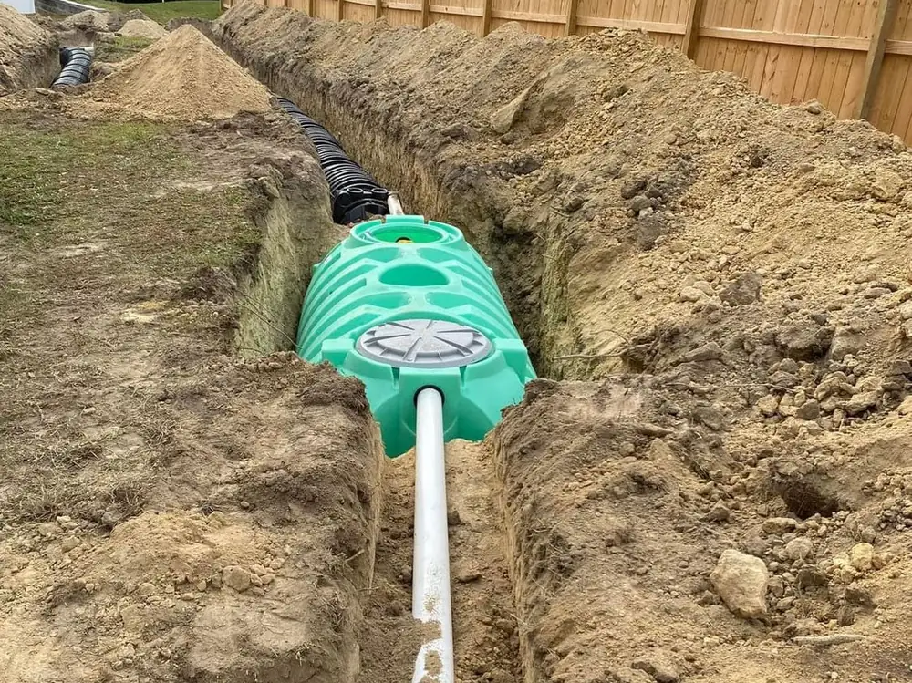
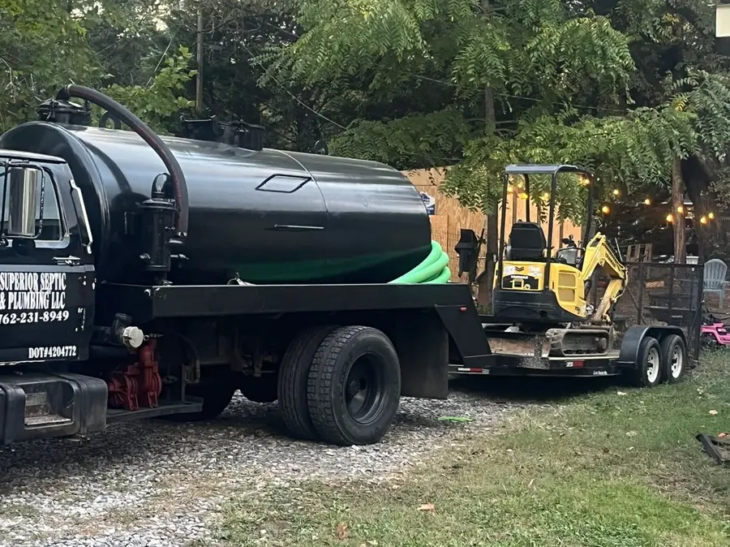
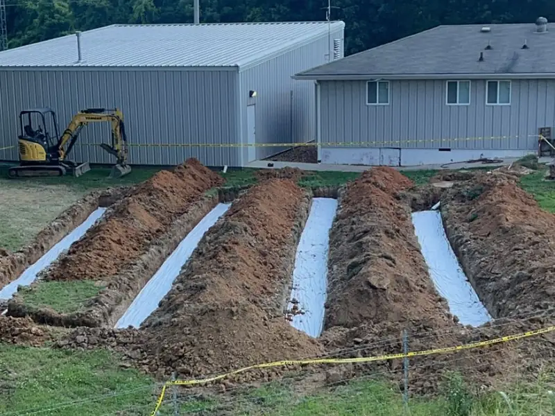
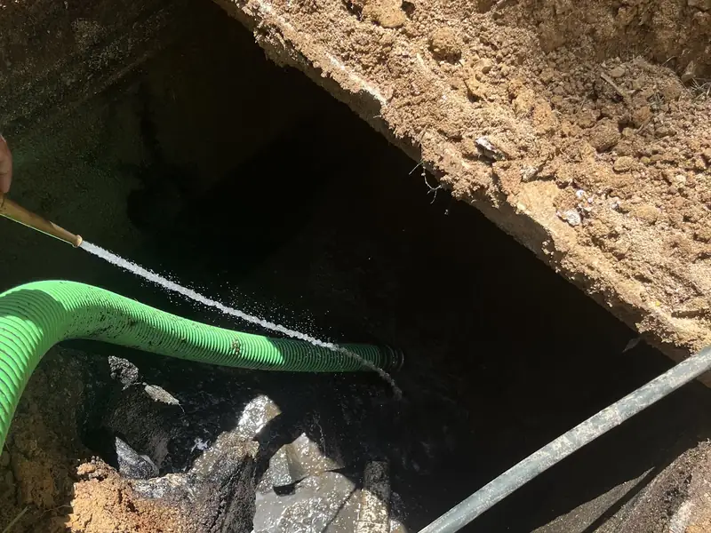
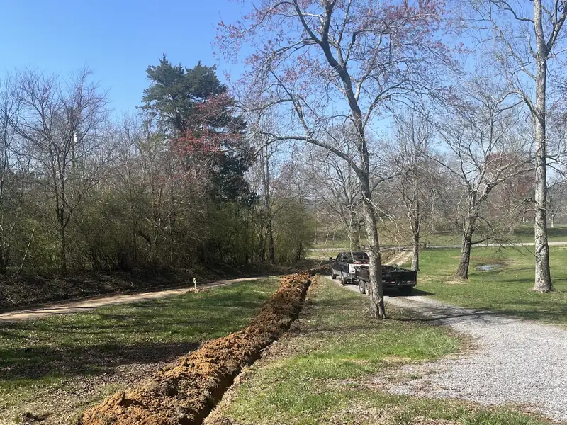

Septic systems installed, repaired and pumped.
A family-owned septic and plumbing company working across North Georgia and the Chattanooga area — from a tank that needs pumping to a full field-line replacement.
4.9 out of 5 across 92 Google reviews

Why homeowners call Superior
What they do
The service list below is Superior's own, in their own words.
Septic system repair
Repairs, maintenance and installation to keep a system working and prevent backups.
Septic tank installation
New tanks set and connected, with assessment of the site beforehand.
Septic tank pumping
Waste removal and routine maintenance to stop blockages before they start.
Field line repair & installation
Drain-field lines replaced or newly laid when the old lines stop taking water.
Sewer line repair & replacement
Sewer lines repaired or fully replaced, including runs under driveways.
Drain cleaning
Residential and commercial — kitchen, bathroom and main household lines.
Water heater repair & installation
Repair or replacement of residential water heaters.
Water line repair & installation
Supply lines repaired, replaced or run new.
Grinder & sump pump service
Grinder pumps and sump pumps serviced and replaced.
Certified by the State of Georgia — for both halves of the job
Georgia keeps two separate certifications for septic work, and plenty of companies hold only one. Superior Septic & Plumbing LLC appears on both published Georgia Department of Public Health lists, filed under Walker County:
- Georgia Approved Septic Tank Pumper Companies — so they can legally pump and haul septage.
- Georgia Certified Septic Tank Installer Companies — so they can legally install a new system, not just empty an old one.
Checked directly against the Environmental Health Section's county lists on 27 October 2026 — dph.georgia.gov. This is a state record, not a claim the company makes about itself.
The work
Every photograph below was taken and published by Superior Septic & Plumbing on their own Google Business Profile.




What customers actually said
Real Google reviews, quoted word for word, under the names the reviewers published them with. Pulled from the Google Places API on 27 October 2026.
“The team at Superior was awesome and quick to help when our field lines failed and we needed new ones put in pronto! Absolutely reliable and did an amazing job. It is so hard to find good, honest people. They will definitely be my go to people from now on!”
Christina Khalili 5 out of 5 · June 2026
“So, after living at this place for 34 years, the field lines weren't working anymore. These guys worked hard to come up with the best solution. Even the County Inspector was complimenting their work. I don't believe anyone else would have done a better job. I feel confident about the next 34 years.”
Mark Michaels 5 out of 5 · July 2026
“The crew Jeff sent went above and beyond. One of the team had a family emergency so he made two trips to my house to do what he promised. The rest of the crew worked right thru lunch to get the job done. On time and on budget. A++ service.”
Rob Nealon 5 out of 5 · May 2026
“Excellent service and communication. We needed to coordinate two contractors for our sewer line replacement due to its location under our concrete driveway. We appreciated how responsive and easy to work with they were as well as the great job they did.”
Tina Marie Lindahl 5 out of 5 · August 2026
“I was contacted by Superior and they came out and moved the clean out and laid seed/straw. I appreciate this. 5 stars.”
Tucker Hill 5 out of 5 · June 2026 — after raising a problem and having it put right
Where they work
Superior's own published service area — the Chattanooga metro and the North Georgia counties below it.
Tennessee
- Chattanooga
- East Chattanooga
- East Ridge
- Red Bank
- Hixson
- Soddy-Daisy
- Signal Mountain
- Ooltewah
- Collegedale
- Harrison
- Apison
- Cleveland
Georgia
- Rossville
- Chickamauga
- Rock Spring
- LaFayette
- Lookout Mountain
- Wildwood
- Trenton
- Tunnel Hill
- Dalton
- Varnell
- Calhoun
- Trion
Get hold of them
- Primary line
- (423) 654-0584
- Second line
- (706) 841-4347
- Shop
- 1652 McFarland Ave, Rossville, GA 30741
- Hours, as published on their Google profile
-
Monday–Saturday · 8:00 AM–5:00 PM
Sunday · Closed - On Google
- Google Business Profile & directions